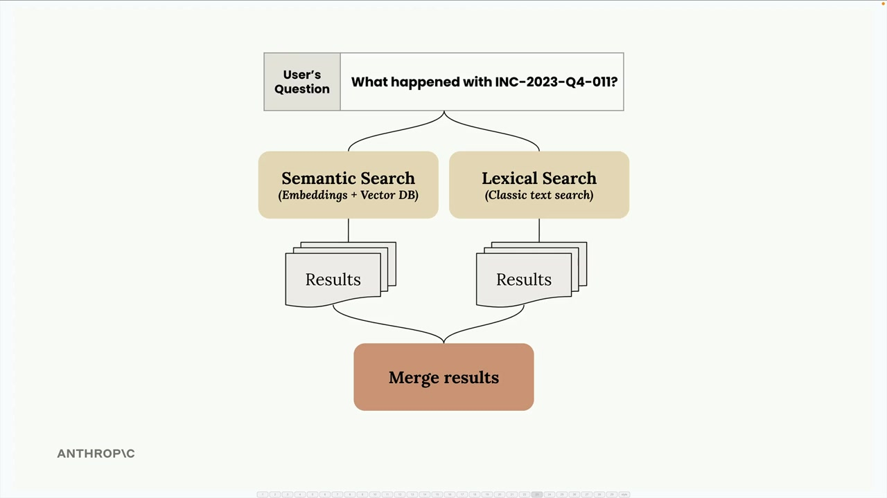
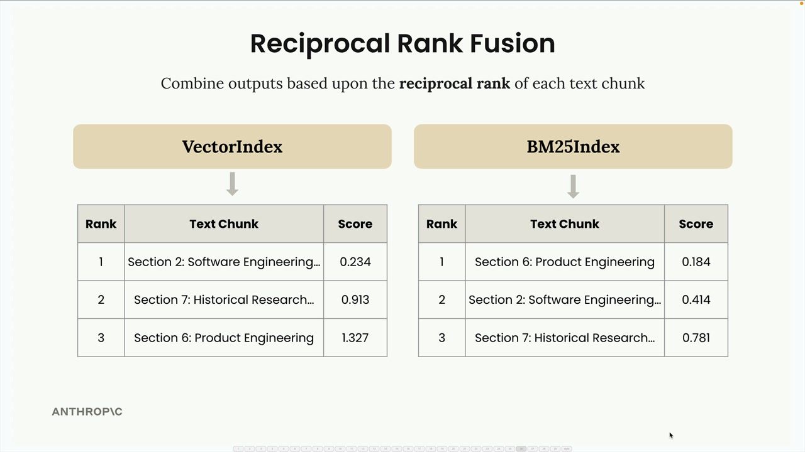
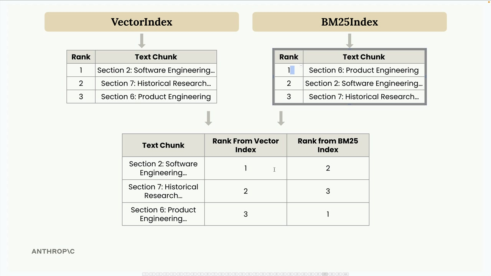
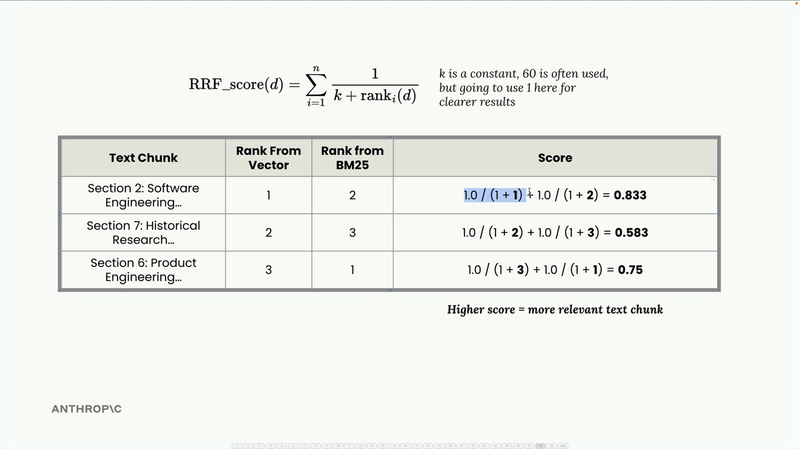
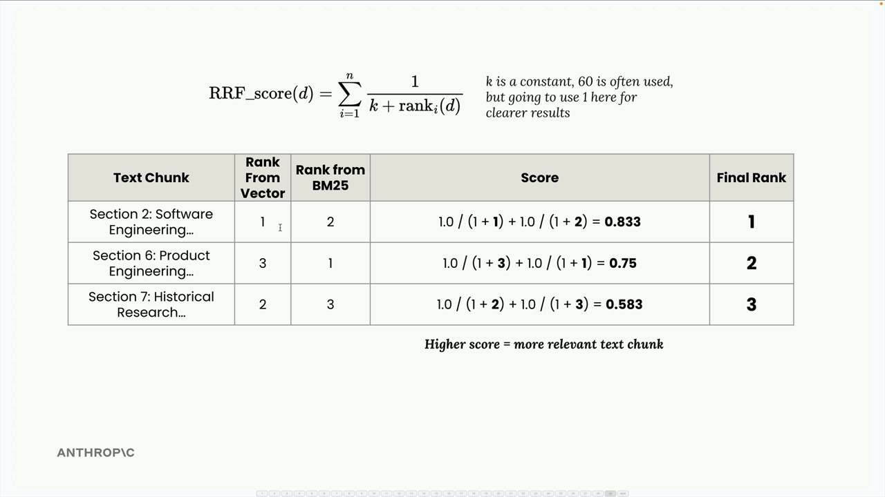
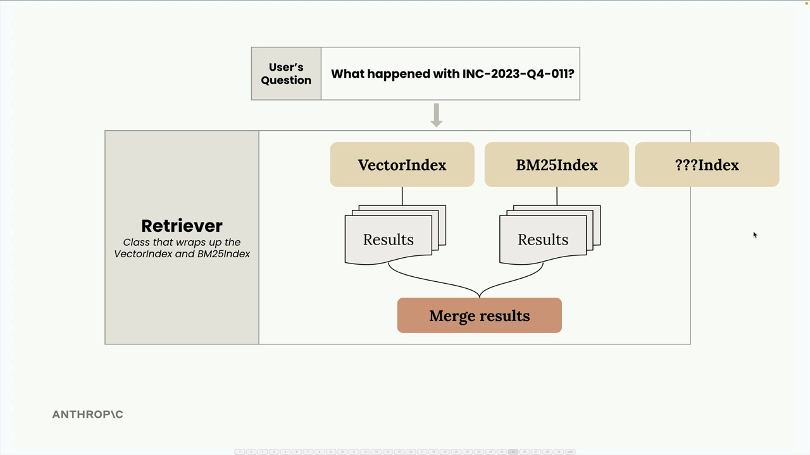
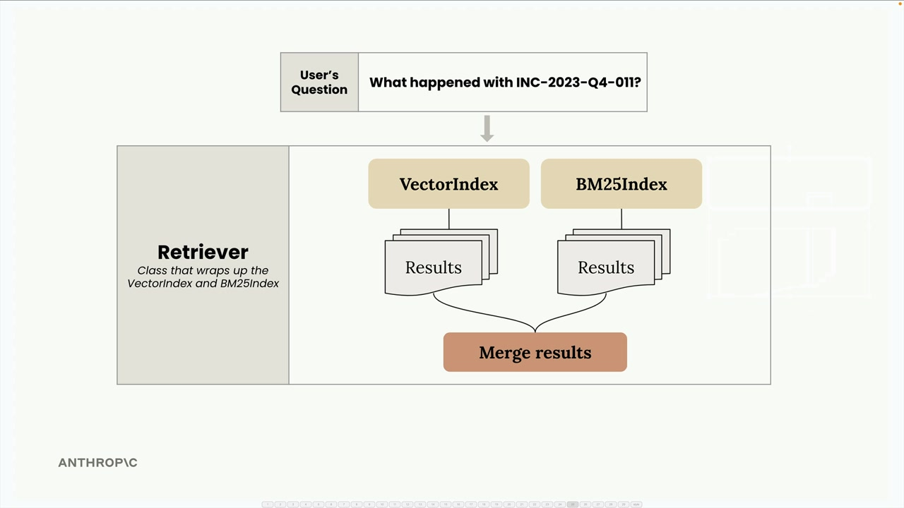

멀티 인덱스 RAG 파이프라인
우리는 의미 검색(벡터 임베딩 사용)과 어휘 검색(BM25 사용)을 각각 별도로 구현했습니다. 이제 두 방식의 장점을 모두 활용하는 통합 검색 파이프라인으로 결합할 차례입니다.
멀티 인덱스 아키텍처
VectorIndex와 BM25Index 클래스는 거의 동일한 API를 공유합니다. 두 클래스 모두 add_document()와 search() 메서드를 갖고 있습니다. 이러한 일관성 덕분에 Retriever라는 새 클래스로 두 인덱스를 쉽게 묶을 수 있습니다.

Retriever는 사용자 쿼리를 두 인덱스에 전달하고, 결과를 수집한 후 상호 순위 융합(reciprocal rank fusion)이라는 기법으로 병합하는 조율자 역할을 합니다.
상호 순위 융합 이해하기
서로 다른 검색 방식의 결과를 합치는 것은 단순히 목록을 이어 붙이는 것만큼 간단하지 않습니다. 각 방식마다 서로 다른 점수 체계를 사용하기 때문에, 순위를 공정하게 정규화하고 결합하는 방법이 필요합니다.

예시를 통해 상호 순위 융합이 어떻게 작동하는지 살펴봅시다. "INC-2023-Q4-011"에 관한 정보를 검색하면 다음과 같은 결과가 나온다고 가정해 보겠습니다:
- VectorIndex 결과: 섹션 2 (순위 1), 섹션 7 (순위 2), 섹션 6 (순위 3)
- BM25Index 결과: 섹션 6 (순위 1), 섹션 2 (순위 2), 섹션 7 (순위 3)

이를 하나의 표로 합쳐 각 텍스트 청크의 두 인덱스별 순위를 확인한 후, RRF 공식을 적용합니다:
RRF_score(d) = Σ(1 / (k + rank_i(d)))여기서 k는 상수(보통 60을 사용하지만, 여기서는 결과를 더 명확히 보기 위해 1을 사용합니다)이고, rank_i(d)는 i번째 순위 목록에서 문서 d의 순위입니다.

이 예시에서 계산하면:
- 섹션 2: 1.0/(1+1) + 1.0/(1+2) = 0.833
- 섹션 7: 1.0/(1+2) + 1.0/(1+3) = 0.583
- 섹션 6: 1.0/(1+3) + 1.0/(1+1) = 0.75

최종 순위는 섹션 2 (0.833), 섹션 6 (0.75), 섹션 7 (0.583)이 됩니다. 섹션 2가 두 인덱스 모두에서 좋은 성적을 거뒀으므로 최상위로 올라오는 것은 직관적으로 납득이 됩니다.
구현 세부 사항
Retriever 클래스는 여러 검색 인덱스를 감싸고 통합된 인터페이스를 제공합니다:
class Retriever:
def __init__(self, *indexes: SearchIndex):
if len(indexes) == 0:
raise ValueError("At least one index must be provided")
self._indexes = list(indexes)
def add_document(self, document: Dict[str, Any]):
for index in self._indexes:
index.add_document(document)
def search(self, query_text: str, k: int = 1, k_rrf: int = 60):
# Get results from all indexes
all_results = []
for idx, results in enumerate(all_results):
for rank, (doc, _) in enumerate(results):
# Track document ranks across indexes
# Apply RRF scoring formula
# Return merged and sorted results핵심 통찰은 서로 다른 검색 구현체 간에 일관된 API를 유지함으로써 강한 결합 없이 쉽게 조합할 수 있다는 점입니다.
하이브리드 방식 테스트
앞서 "INC-2023-Q4-011"에 무슨 일이 있었나요?"를 검색했을 때 벡터 단독 방식에서 예상치 못한 결과가 나왔던 것을 기억하시나요? 사이버보안 인시던트(섹션 10)가 첫 번째로 나왔지만, 더 관련성 높은 소프트웨어 엔지니어링 섹션 대신 재무 분석(섹션 3)이 두 번째로 나왔습니다.
하이브리드 리트리버를 사용하면 훨씬 더 나은 결과를 얻을 수 있습니다:
- 섹션 10: 사이버보안 분석 - 인시던트 대응 보고서 (가장 관련성 높음)
- 섹션 2: 소프트웨어 엔지니어링 - 프로젝트 피닉스 안정성 개선 (두 번째로 관련성 높음)
- 섹션 5: 법적 동향 (세 번째)
이는 의미 검색과 어휘 검색을 결합함으로써 어느 한 방식만 사용했을 때의 한계를 극복할 수 있음을 보여줍니다.
확장성

이 아키텍처의 가장 큰 장점은 확장성입니다. 모든 인덱스가 add_document()와 search() 메서드를 갖는 동일한 SearchIndex 프로토콜을 구현하므로, 새로운 검색 방식을 쉽게 추가할 수 있습니다:

키워드 기반 인덱스를 추가하고 싶으신가요? 그래프 기반 검색은 어떤가요? 특수 도메인 인덱스는요? 동일한 인터페이스만 구현하면 Retriever가 자동으로 융합 과정에 통합시켜 줍니다.
이 모듈식 접근 방식은 각 검색 구현체를 집중적이고 테스트 가능하게 유지하면서, 최종 시스템에서 각각의 장점을 깔끔하게 결합하는 방법을 제공합니다.